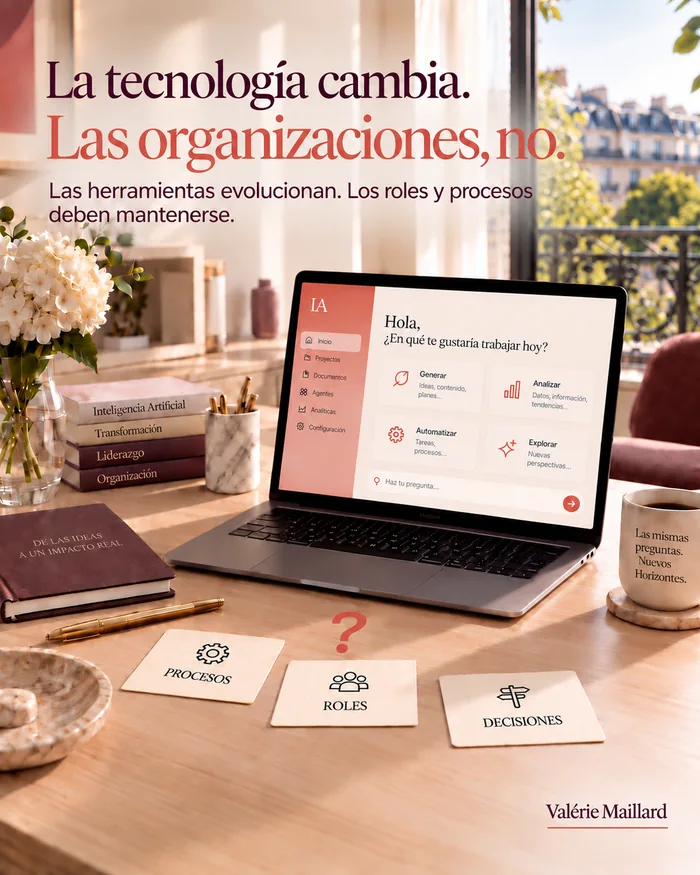

La transformación con IA
rara vez fracasa por la tecnología.
Fracasa cuando la organización
no ha cambiado, solo la herramienta.
 Artículo desarrollado a partir de mi publicación en LinkedIn ()
Artículo desarrollado a partir de mi publicación en LinkedIn ()
Actualizado el
Versión breve →
Directivos de pymes: la transformación con IA rara vez fracasa por la tecnología.
Según una encuesta de Orgvue de 2026, el 78 % de las organizaciones ha visto proyectos de IA fracasar o quedarse bloqueados en fase piloto. La causa: falta de alineación con la organización, no falta de herramientas.
Una verdadera transformación toca tres cosas, en este orden: quién decide, qué procesos se revisan, qué roles cambian.
La señal de que no ha ocurrido: sigue habiendo las mismas reuniones de validación.
Para empezar, basta una página: ¿quién tendrá que decidir de otra manera cuando la herramienta esté en marcha?
Si la respuesta es «nadie», está automatizando lo que ya existe. No transforma nada.

¿Dirige una pyme y va a lanzar un proyecto de IA?
Este artículo es para usted. Durante mis años junto a directivos, vi pasar muchas herramientas y muchos planes de transformación. La IA todavía no existía en esta forma. Pero la historia ya era la misma.
La herramienta rara vez es el problema. El problema es todo lo que no se mueve a su alrededor.
Lo vimos en cada ola tecnológica: los ERP en los años 2000, después los CRM, más recientemente la nube. Cada vez, la herramienta cumplió sus promesas técnicas. Cada vez, una parte de las empresas solo sacó una fracción del valor anunciado, porque nada más había cambiado a su alrededor.
Un informe de RAND Corporation recoge una estimación que da que pensar: más del 80 % de los proyectos de IA fracasan. La razón no es técnica: estos proyectos no están alineados con las prioridades ni con la organización de la empresa.
Una encuesta publicada en mayo de 2026 lo confirma. Entre 1163 responsables de decisión de ocho países, Orgvue constata que el 78 % de las organizaciones ha visto proyectos de IA fracasar o quedarse bloqueados en fase piloto. Para su director general, estos fracasos se deben a la organización del trabajo, no a la tecnología.
Esa cifra no significa que la IA no funcione.
Significa que una herramienta, por sí sola, no transforma nada.
🔧 ¿Por qué no basta con cambiar el software?
Porque se mantienen los mismos procesos, los mismos roles, las mismas reuniones en las que nadie decide.
Resultado: la IA se suma a lo que ya existe. No lo cambia.
¿La señal más segura de que no ha habido transformación?
Sigue habiendo las mismas reuniones de validación. Una herramienta nueva que pasa exactamente por el mismo circuito de aprobaciones, con las mismas personas consultadas en el mismo orden, no ha transformado nada. Ha acelerado un eslabón. La cadena sigue igual de larga.
¿Ya nombraron este fenómeno los economistas?
Sí, y desde hace mucho. Ya en 1987, el economista Robert Solow observaba, a propósito de la informatización de las empresas: «se ve la era del ordenador en todas partes, salvo en las estadísticas de productividad». Los investigadores Erik Brynjolfsson y Lorin Hitt mostraron después por qué. La tecnología solo rinde si va acompañada de una inversión equivalente en la organización, a menudo invisible en los presupuestos: revisar los procesos, redistribuir las decisiones, hacer evolucionar los roles.
La IA generativa hace exactamente lo mismo, pero más rápido. La herramienta se instala en unas semanas. La organización tarda meses, a veces años, en seguirla, cuando la sigue. Esa distancia es lo que muestra la estimación recogida por RAND: solo un proyecto de cada cinco la superaría con éxito.
¿Qué cambia esto en concreto para el directivo de una pyme?
Una consecuencia muy directa: el presupuesto de un proyecto de IA nunca debería limitarse a la licencia y a la integración técnica. Reserve una parte para el tiempo que pasará con los equipos revisando quién decide qué, una vez que la herramienta esté en marcha. Ese tiempo no aparece en ninguna factura de proveedor. Sin embargo, es lo que decide si su proyecto se une a los cuatro de cada cinco que fracasan, o al quinto que triunfa.
Seis meses después del lanzamiento, haga una prueba sencilla. Pida al equipo que describa su forma de trabajar sin mencionar la herramienta. Si la descripción es idéntica a la de antes, con un paso más, no se ha transformado nada. El software ha cambiado. El trabajo, no.
🎯 ¿Qué tres cosas debe tocar una verdadera transformación con IA?
- Quién decide, y en qué momento.
- Qué procesos se rediseñan, y no solo se automatizan.
- Qué roles evolucionan de verdad.
Si la decisión sigue en el mismo nivel que antes, automatizar solo acelera un cuello de botella que ya existía. Hacer más rápido un paso inútil no lo vuelve útil. Si nadie cambia lo que hace con el tiempo ganado, ese tiempo se llena de otra cosa, sin ningún beneficio para la empresa. Estos tres puntos se comprueban uno a uno: se puede automatizar sin decidir de otra manera, o decidir de otra manera sin que cambie ningún rol. En ambos casos, falta uno para hablar de transformación.
Sin estos tres cambios, la empresa vuelve enseguida a sus viejos reflejos, con una herramienta más.
¿En qué orden abordar estos tres puntos?
El orden importa. Primero, quién decide y cuándo: mientras eso no esté claro, nadie sabe qué proceso revisar primero. Después, el proceso. Por último, los roles. Un rol no cambia porque se haya anunciado. Cambia porque el trabajo concreto ha cambiado de forma.
Empezar por el final, anunciando que los roles van a cambiar sin haber revisado ni la decisión ni el proceso, rara vez da el resultado esperado. Cambia el discurso, y los resultados siguen igual.
¿Por dónde empezar, en concreto?
Antes de cualquier proyecto de IA, no se pregunte qué hará la herramienta. Pregúntese quién tendrá que decidir de otra manera cuando esté en marcha. Si la respuesta es «nadie», está automatizando lo que existe, no transformando nada.
Ese mapa cabe en una página. Precisamente porque es breve, no hay forma de esquivarlo. Hágalo en una hora, con los responsables de los equipos afectados: para cada decisión que toca la herramienta, anote quién la toma hoy, quién la tomará mañana y en qué momento.
¿Cómo saber rápidamente en qué punto está su organización?
Tres preguntas suelen bastar para saber en qué punto está un proyecto de IA. Respóndalas con sinceridad, con el equipo que usa la herramienta a diario, no solo con quien la eligió. La distancia entre ambas respuestas ya es, a menudo, un hallazgo.
- ¿Alguien ha tomado, desde la implantación, una decisión que no habría tomado antes, con la misma autoridad que antes?
- ¿Un proceso ha perdido un paso, en lugar de ganar uno?
- ¿Alguien ha visto su rol redefinido, y no solo su herramienta de trabajo?
Si responde que no tres veces, el proyecto tiene muchas probabilidades de unirse a los cuatro de cada cinco que fracasan, según la estimación recogida por RAND, sea cual sea la calidad de la IA elegida.
Esta prueba no sustituye a un diagnóstico completo. Pero se hace en diez minutos, sin consultor, y le dice enseguida si el tema merece profundizarse. Es la primera pregunta que yo haría ante un proyecto de IA ya lanzado: no «¿qué herramienta ha elegido?», sino «¿quién, en su empresa, decide de otra manera desde que funciona?».
💬 En su organización,
¿qué debería cambiar antes de la herramienta, y no después?
Fuentes: RAND Corporation, «The Root Causes of Failure for Artificial Intelligence Projects and How They Can Succeed», 2024; Orgvue, «92% of organizations have invested in AI but 78% say projects have either stalled or failed», 12 de mayo de 2026.
Para ir más lejos
Cuatro preguntas más para prolongar la reflexión.
Leer el artículo completounas 3.000 palabras
¿En qué se diferencia la IA generativa de las olas anteriores?
En un punto, lo cambia todo: entra por los empleados, no por la dirección. Un ERP o un CRM se desplegaba desde arriba, con un proyecto, un presupuesto y un calendario. Una herramienta de IA generativa se descarga en dos minutos, sin pedir permiso a nadie.
La transformación ya no parte de un plan. Parte de usos que ya existen, a menudo invisibles, que la dirección tiene que descubrir antes de poder orientarlos. No cambia solo la velocidad: cambia el punto de partida.
¿Por qué la productividad suele bajar antes de subir?
Porque una empresa que cambia su forma de trabajar paga primero un coste de aprendizaje. Algunos economistas, entre ellos Erik Brynjolfsson, hablan de curva en J: el rendimiento baja mientras los equipos se forman y los procesos se reorganizan, y después sube por encima del nivel de partida.
Conocer esta curva evita un error frecuente: detener un proyecto en el fondo del bache, justo cuando el esfuerzo empieza a dar fruto. Anuncie ese bache de antemano, con su duración probable: así protege también la confianza de los equipos.
¿Por qué proceso empezar?
Por el que cumple cuatro condiciones:
se repite a menudo, cada día o cada semana;
molesta, a quienes lo hacen y a quienes esperan su resultado;
su resultado se ve, por un cliente o por la dirección;
solo afecta a uno o dos equipos.
Un primer éxito en un proceso así vale más que un gran proyecto que se atasca. Aporta la prueba, y la prueba da ganas de seguir en otras áreas.
¿Hay que automatizar primero y transformar después?
Empezar automatizando un paso no es un error, si se hace con conocimiento de causa. La automatización permite aprender, medir y tranquilizar.
El error es quedarse ahí. Con cada automatización, plantee una pregunta por escrito: si este paso va más rápido, ¿qué decisión o qué paso siguiente tiene que cambiar para que la ganancia llegue al cliente?
Sin esa pregunta, acumula aceleraciones locales que nunca se unen.
¿Cómo gestionar el periodo en que conviven lo antiguo y lo nuevo?
Poniéndole fecha de fin. Mantener el proceso antiguo junto al nuevo tranquiliza al principio, y luego se convierte en lo peor de los dos mundos: cada uno hace su trabajo dos veces, y nadie sabe cuál es el que vale.
Una fecha de cambio, conocida por todos, zanja la cuestión. Antes de esa fecha, el proceso antiguo sigue siendo la referencia. Después, solo cuenta el nuevo, y el antiguo desaparece, incluidos los archivos y accesos directos que permitirían volver a él a escondidas.
Un ejemplo: la gestión de presupuestos en una pyme
Antes del proyecto, un presupuesto sigue este circuito:
el comercial reúne la información y redacta una primera versión;
el responsable técnico comprueba que es viable;
la dirección valida el precio;
la asistente le da formato y lo envía.
Una herramienta de IA puede preparar la primera versión en pocos minutos. Si el resto del circuito no cambia, el presupuesto simplemente espera más tiempo en el paso siguiente.
La verdadera transformación es preguntarse, por ejemplo, si la dirección tiene que validar todos los precios, o solo los que se salen de una tabla definida. Y si la comprobación técnica puede apoyarse en una lista de control preparada por la herramienta. La ganancia viene de esas dos decisiones mucho más que de una redacción más rápida.
¿Qué nuevos roles están apareciendo?
No necesariamente puestos nuevos, sino nuevas responsabilidades. Mejor nombrarlas que dejarlas en el aire.
Tres aparecen a menudo:
el referente, que conoce la herramienta y responde a las preguntas de sus compañeros;
el revisor, que comprueba lo que produce la herramienta antes de que salga del equipo;
el responsable del proceso, que decide cómo evoluciona el circuito y arbitra cuando dos equipos no están de acuerdo.
Estas responsabilidades llevan tiempo. Si se añaden sin quitar nada por otro lado, se ejercen mal, y luego dejan de ejercerse.
¿Qué competencias desarrollar primero?
Menos la técnica que tres capacidades de fondo: decir con claridad lo que se espera, comprobar lo que se recibe y juzgar cuándo el resultado no sirve.
Estas competencias no tienen nada de nuevo. Son las de quien sabe delegar: confiar una tarea, controlar el resultado, retomar el control si hace falta. Los mandos que ya las tienen se adaptan rápido a las herramientas de IA. Los que nunca las desarrollaron descubren el problema en ese momento.
¿Cómo medir que una transformación avanza?
Cuatro indicadores sencillos dicen más que un cuadro de mando complicado:
el plazo entre una solicitud y la decisión que la responde;
el número de pasos en los procesos afectados;
la proporción de equipos que usa de verdad las nuevas herramientas;
el tiempo liberado, y a qué se dedica.
Anotadas al lanzamiento y después cada trimestre, estas cifras cuentan la historia real del proyecto, mucho mejor que las impresiones que se comparten en las reuniones.
¿Cómo evitar que el proyecto dependa de una sola persona?
Muchas transformaciones tienen un motor: una persona entusiasta, que encontró la herramienta, convenció a la dirección y formó a sus compañeros. El día que cambia de puesto, el proyecto se apaga.
La solución: formar pronto una pareja, y después un pequeño grupo, que comparta conocimientos y decisiones. Escribir lo aprendido, las instrucciones que funcionan, los errores que conviene evitar, forma parte del proyecto tanto como el despliegue.
¿Hay que contárselo a los clientes?
Sí, en cuanto la transformación cambia algo para ellos: un plazo, un interlocutor, el formato de una respuesta. Un cliente avisado acepta un ajuste. Un cliente sorprendido lo vive como un empeoramiento.
Pídales su opinión unas semanas después del cambio. Tendrá una medida que sus indicadores internos no dan: ¿el cambio ha mejorado lo que viven ellos, o solo lo que vive la empresa?
¿Cuánto tiempo hay que prever?
Más que el despliegue de la herramienta, y menos de lo que se teme si se avanza por etapas. En un proceso limitado, unos meses suelen bastar para ver moverse la decisión, el circuito y los roles.
Lo que alarga los plazos rara vez es la técnica. Son las decisiones aplazadas: quién valida ahora, qué paso desaparece, quién asume qué tarea. Cada semana de retraso se paga en doble trabajo y en cansancio de los equipos.
¿Qué decir a los equipos sobre lo que no cambiará?
Suele ser la pregunta más esperada, y la menos tratada. Una transformación inquieta porque parece ponerlo todo en cuestión.
Diga con claridad lo que se mantiene: los valores, los compromisos con los clientes, las personas ante las que se rinde cuentas. Así da un punto de apoyo a quienes tienen que cambiar el resto. El cambio se acepta mejor cuando tiene límites conocidos.
¿Cuándo recurrir a una mirada externa?
Cuando la empresa ya no consigue ver sus propios hábitos. Los circuitos de validación, las reuniones rituales y los roles implícitos parecen naturales a quienes los viven cada día.
Una mirada externa no trae una solución hecha. Hace las preguntas que ya nadie hace internamente, sin juego de poder, y ayuda a separar lo necesario de lo que es pura costumbre.
Lo que la transformación exige, en el fondo
Tiempo de dirección, más que presupuesto. Las herramientas se compran rápido. Las decisiones sobre quién decide, qué procesos cambian y qué roles evolucionan no se delegan.
Una dirección que acepta dedicar ese tiempo obtiene lo que ninguna herramienta dará por sí sola: una empresa que trabaja de otra manera, y no solo más rápido.
¿Cómo implicar a los equipos desde el principio?
Hágales participar en la descripción del problema, antes de hablar de soluciones. Quienes hacen el trabajo conocen los verdaderos puntos de bloqueo, los que ningún organigrama muestra.
Una transformación construida con ellos tiene muchas más probabilidades de aplicarse que una transformación anunciada.
Un taller de media jornada, en el que cada uno cuenta una tarea pesada de su semana, suele sacar más ideas que un cuestionario.
Invite también a un escéptico declarado. Sus objeciones, escuchadas pronto, cuestan mucho menos que una resistencia descubierta después del lanzamiento.
En la práctica: un taller de una hora con cuatro o cinco personas del terreno y una sola pregunta: «¿qué le hace perder más tiempo?»
¿Cómo saber que una organización ha cambiado de verdad?
Tres señales concretas. Las decisiones las toman otras personas, o en otro momento. Los procesos han cambiado en los hechos. Los roles han evolucionado, y se han abandonado algunas tareas.
Si nada de eso se ha movido, la herramienta está instalada, pero la empresa no ha cambiado.
Es más fácil verlo con alguien ajeno al día a día, que hace preguntas ingenuas sin ningún juego de poder.
Vuelva a hacer la pregunta unos meses después. Un cambio real resiste al tiempo. Un cambio de fachada se borra en cuanto baja la atención.
Una prueba sencilla: pregunte a un recién llegado cómo se trabaja aquí. Si describe la antigua manera de hacer, nada ha cambiado de verdad.
¿Qué hacer cuando la transformación se estanca?
Vuelva a la pregunta de partida: ¿qué debía cambiar, y qué lo impide?
La respuesta casi siempre es una decisión no tomada, un proceso no revisado o un rol no aclarado.
Añadir una herramienta en ese momento agrava el problema. Primero hay que quitar el obstáculo en la organización.
Un punto breve, una vez al mes, sobre el obstáculo del momento basta para evitar que el bloqueo se instale.
Escriba el obstáculo negro sobre blanco, con un responsable y una fecha. Un bloqueo que nadie asume acaba rodeado en lugar de resuelto.
Un punto de control cada dos semanas basta para ver si el obstáculo se ha movido.
¿Qué papel tiene el directivo a lo largo del tiempo?
Mantener el rumbo y hacer visibles las decisiones: lo que continúa, lo que se detiene, lo que no se hará. Una transformación dura meses, y la atención del directivo es uno de sus recursos más escasos.
Un directivo presente, sin dirigirlo todo, da a la empresa permiso para cambiar.
Es también una señal: el tema sigue siendo una prioridad de la dirección, no un proyecto que se apaga en silencio.
Unos minutos reservados al tema en cada comité de dirección bastan para mantener esa señal encendida.
La señal más fuerte sigue siendo el ejemplo: un directivo que aplica él mismo la nueva manera de trabajar vale más que cualquier discurso.